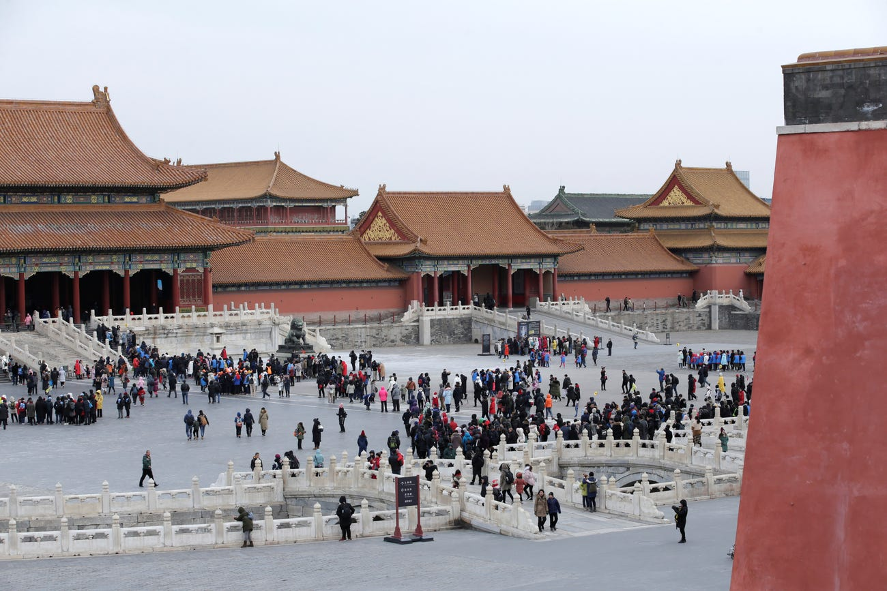
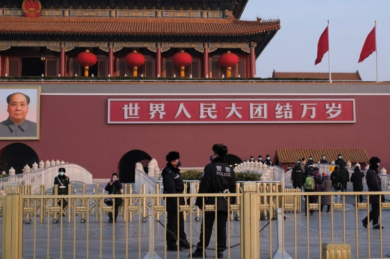

January 2020
- On January 9, 2020, the WHO announced a mysterious coronavirus related pneumonia to have appeared in a live animal and seafood market in Wuhan, China. At this time, there are 59 cases, but experts have already expressed concern.
- The CDC confirms the first U.S. case of coronavirus when a Washington state resident returns from Wuhan on January 21, beginning consideration of contact tracing. On the same day, Chinese scientists confirm human transmission as it has killed 4 people and infected over 200 in China. However, the WHO is still unsure of the necessity of declaring a public health emergency.
- Within two days, 13 more people died and an additional 300 are infected. China makes the unprecedented move of closing off Wuhan and placing residents under strict lockdown.
2020一月份
- 2020年1月9日，世卫组织宣布，中国武汉的一个活体动物和海鲜市场出现了一种神秘的冠状病毒相关肺炎。此时已有59例，但专家已经表示关注。
- 疾控中心确认了美国首例冠状病毒病例，1月21日，一名华盛顿州居民从武汉返回，开始考虑接触者追踪。同一天，中国科学家证实了人类传播，因为它已经在中国造成4人死亡，200多人感染。然而，世卫组织仍然不确定宣布公共卫生紧急状态的必要性。
- 两天内，又有13人死亡，另有300人感染。中国采取了前所未有的行动，关闭武汉，并对居民进行严格封锁。
As cities shut down, Chinese social media platforms, such as Weibo and Douyin, are flooded with encouraging messages to stay strong in quarantine.
随着城市关闭，微博和豆印等中国社交媒体平台充斥着鼓励人们保持隔离状态的信息。
With Chinese New Year aruond the corner, people are forced to find ways to spend the most important holiday of the year safely and adjust traditions to the circumstances. A comparison of 2019 (left) to 2020 (right) is shown below.
随着中国新年的临近，人们被迫想方设法安全度过一年中最重要的节日，并根据情况调整传统。2019年(左)与2020年(右)的对比如下。


Back